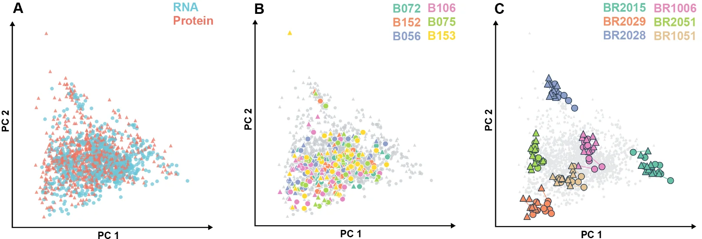
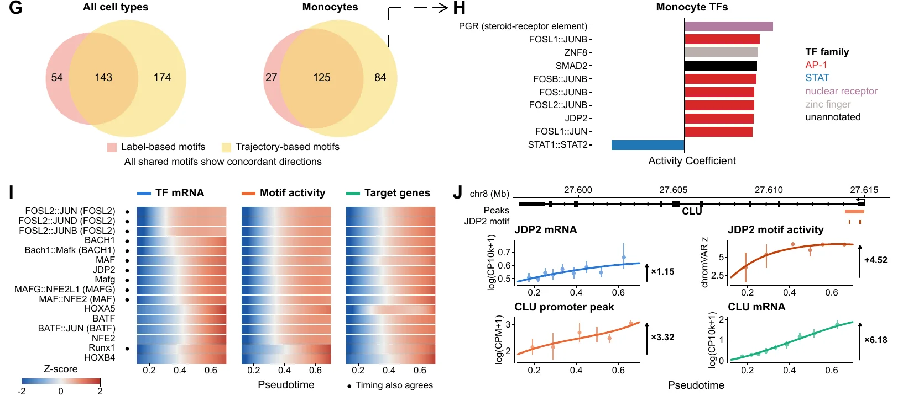

SampleDisco
Harmonizing Single-Cell Data Across Studies and Modalities to Reveal Sample Heterogeneity
Single-cell studies now include hundreds of patients or donors, but comparing those samples is hard when they come from different studies or were measured with different assays. SampleDisco summarizes each sample by which cell states it contains and how its cells are shifted within each cell type, placing RNA, chromatin-accessibility and protein samples in one shared embedding without paired measurements. Against 13 other methods it ranked first overall in all four benchmark panels, and it was used to follow donors across assays over time and to find candidate regulatory programs along a COVID-19 severity trajectory.
The problem
Single-cell sequencing measures thousands of individual cells per sample, and studies now often include hundreds of samples from different patients, donors or tissues. Many key questions concern samples rather than cells: which patients resemble each other, how a disease progresses, and which cellular programs drive those differences.
Answering them requires a sample embedding, a map in which each sample is one point and distances reflect biological similarity. Samples can differ because cell types expand or shrink (composition) or because cells of the same type shift their state, and study or batch effects can swamp both signals.
The hardest case is unpaired multi-omics data: one cohort profiled by scRNA-seq (gene expression), another by scATAC-seq (which measures open chromatin), with no known sample correspondence. Existing sample-level methods were designed for single-omics or paired data, and a prior benchmark found that simple composition and pseudobulk baselines often match more complex ones.
How it works
SampleDisco describes each sample through two complementary channels. The composition channel records how its cells are spread over shared cell states at three resolutions, from coarse cell types to fine clusters. The reference-relative mean displacement (RMD) channel records, for each coarse cell type, how far the sample's average cell lies from a reference built from the other samples of the same modality or study.
Building that reference within each modality or study removes global assay and batch offsets. Because SampleDisco works on top of an existing integrated cell space (scGLUE for RNA–ATAC, MaxFuse for RNA–protein), samples from different assays land in one embedding without paired measurements.
- Two cell spaces: one with sample effects removed, which defines clusters shared by all samples, and one that keeps sample-level variation for measuring displacement.
- Four blocks: coarse, medium and fine composition (cells softly assigned to up to 120 and 300 cluster “anchors” at the finer levels) plus RMD, down-weighted when a sample has few cells of a type.
- Fusion: blocks are rescaled and weighted (by default RMD carries as much weight as the three composition blocks combined), concatenated, reduced to 10 dimensions by principal component analysis (PCA) and corrected for remaining batch or modality effects with Harmony.
- Optional phenotype guidance: when labels are partly known, the RMD weight can be tuned to balance batch mixing against label preservation.
- Downstream tools: sample clustering, pseudotime trajectories, phenotype prediction and label transfer, longitudinal fate prediction, and differential analysis of genes and transcription-factor motifs.

The two channels capture different biology. In ENCODE multi-tissue data (44 specimens, 10 tissues), the composition blocks separated tissues more sharply than the RMD block. In scBloodNL, where blood cells were stimulated with pathogens for 3 or 24 hours, the RMD block rather than composition was organized by timepoint, and in the fused embedding timepoint outweighed pathogen identity (maximum per-component R2 0.95 versus 0.26).
Benchmark results
SampleDisco was compared with 13 other approaches: eleven existing sample-embedding methods (including PILOT, QOT, GloScope, MrVI, scPoli and GEDI), the composition baseline scECODA and a pseudobulk baseline. Metrics scored removal of modality or batch effects, preservation of biological labels and, where known, recovery of matched pairs.
On four paired RNA–ATAC datasets with the pairing hidden (ENCODE tissues, heart disease, fetal lutea and retina), the other methods tended to trade modality removal against biology preservation. SampleDisco was the only method in the top three of every category, ranked first in each, and placed first in every dataset (mean rank 1.125). In the fetal tissues, embedding distance tracked age difference (rank correlation 0.86 in lutea, 0.90 in retina).

- Unpaired COVID-19 (405 RNA samples from 11 studies, plus 26 ATAC samples from another): first overall (mean rank 2.17), leading batch and modality removal. Severity directions fitted separately in RNA and ATAC both tracked severity (r = 0.64 and 0.57).
- Lifespan immune atlas (167 RNA and 23 ATAC donors): first overall (mean rank 2.17) and third on biology preservation; the first component correlated with log age at |r| = 0.81.
- Single-modality RNA (COVID-19 subsets of 25–405 samples; 316 healthy-aging samples): first for COVID-19 RNA and for the two combined (mean rank 3.28). Pseudobulk led biology preservation in COVID-19 RNA, and on healthy aging alone SampleDisco placed second, behind scECODA.
Following donors across assays and time
The Sound Life cohort followed 96 healthy younger and older adults for about two years: 868 blood draws, each profiled by scRNA-seq and by spectral flow cytometry (protein), giving 1,736 samples. Modality explained only 2% of embedding variation, and for 58.3% of RNA samples a protein sample from the same donor was among the five nearest, against 5.4% expected by chance.

- Cytomegalovirus (CMV) serostatus and age group were predicted with areas under the ROC curve (AUC) of 0.86–0.91 within an assay and 0.86–0.90 when training on one assay and testing on the other. The mean over these eight tests (0.873) was higher than for other sample-embedding methods run on the same cells.
- A model of each donor's expected path flagged donor BR1049 as the largest departure along the CMV axis, from day 381 onward. This matches the CMV seroconversion the source study documented in that participant, with a first positive test at about day 380.
From samples back to genes and regulators
In the unpaired COVID-19 embedding, four k-means clusters of the RNA samples matched clinical severity only partly (40% agreement), yet reproduced severity-linked composition changes: 24 of 28 significant shifts went the same way, with monocyte enrichment and T-cell depletion in the most severe cluster.
Two clusters corresponding to mild and moderate disease differed at 722 T-cell genes and lay on opposite sides of an axis matching a published CMV-serostatus signature (R2 = 0.64 on the second component). After covariate adjustment, the differential genes overlapped 141 signature genes, against 35.8 expected by chance, and all 141 changed in the same direction: a CMV-associated axis the metadata never recorded.
A severity pseudotime, the embedding direction most correlated with clinical severity, orders RNA and ATAC samples together without paired cells. Along it, 209 transcription-factor (TF) motifs changed in activity in monocytes, versus 152 when clinical labels were used directly, and all 125 shared motifs agreed in direction. Sixteen motifs passed a stricter test requiring concordant change in TF mRNA, motif activity and target-gene expression (no shuffled pseudotime produced any), pointing to a candidate monocyte program involving JDP2, FOSL2, MAF, MAFG, BACH1 and RUNX1.

Why it matters
SampleDisco treats sample embedding as a problem in its own right, keeping composition and within-cell-type displacement as separate, explicitly weighted summaries. Because it builds on any cell-level integration, it can compare samples from RNA, chromatin and protein assays that were never measured together.
The study also notes limits: SampleDisco inherits errors from the upstream integration, no embedding was best on every metric or cohort, and the regulatory programs are candidates rather than established mechanisms. The method is released as the sampledisco Python package.